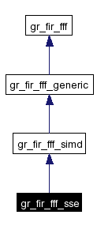
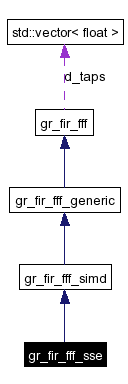

Main Page
|
Modules
|
Namespace List
|
Class Hierarchy
|
Compound List
|
File List
|
Namespace Members
|
Compound Members
|
File Members
gr_fir_fff_sse Class Reference
#include <
gr_fir_fff_x86.h
>
Inheritance diagram for gr_fir_fff_sse:

[
legend
]
Collaboration diagram for gr_fir_fff_sse:

[
legend
]
List of all members.
Detailed Description
SSE version of
gr_fir_fff
.
Public Member Functions
gr_fir_fff_sse
()
gr_fir_fff_sse
(const
std::vector
< float > &taps)
Constructor & Destructor Documentation
gr_fir_fff_sse::gr_fir_fff_sse
(
)
gr_fir_fff_sse::gr_fir_fff_sse
(
const
std::vector
< float > &
taps
)
The documentation for this class was generated from the following files:
gr_fir_fff_x86.h
gr_fir_fff_x86.cc
Generated on Mon Oct 11 07:42:35 2004 for GNU Radio 2.x by
1.3.3
 1.3.3
1.3.3